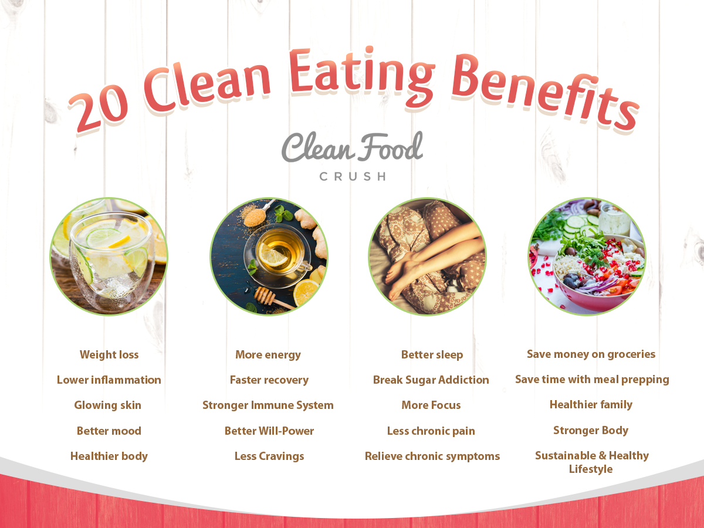
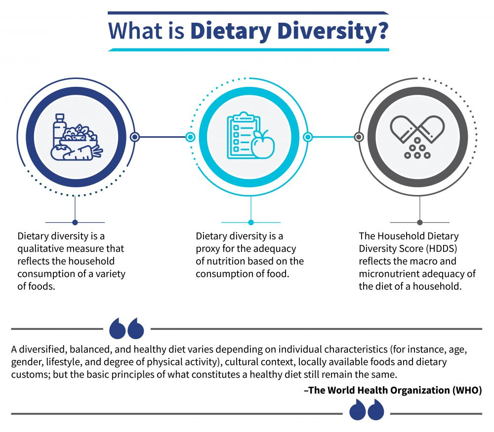

Eating Clean Provides
Fresh food and ingredients are full of essential nutrients, which is why using them when cooking is advantageous for chefs. Foods made from raw plants and animals provide you with some of the vitamins and minerals you need to be in good health. Lower triglycerides, heart-healthy, eco-friendly, and high in fiber content help to regulate blood sugar and are good for your skin. Various fresh fruits and vegetables are essential for a balanced diet as they provide essential nutrients like fiber, vitamins, and minerals. Research has shown that consuming a well-balanced diet rich in fruits and vegetables can reduce your risk of cancer and other illnesses.
 Read More...Food Choices
The main factors influencing dietary decisions are food items' affordability and availability.The benefit from the various nutritional advantages that come with different foods, people must eat a variety of foods. Food that is readily available locally is an affordable and practical choice that improves nutritional value without influencing the community's eating patterns. It's important to pay attention to nutrition in addition to hunger. The use of already-existing, widely-reaching channels is recommended in order to encourage dietary diversity. Given that local foods are more affordable and have superior nutritional value, the government ought to think about incorporating them into the food basket, along with other foods like pulses and millets.
 Learn More...